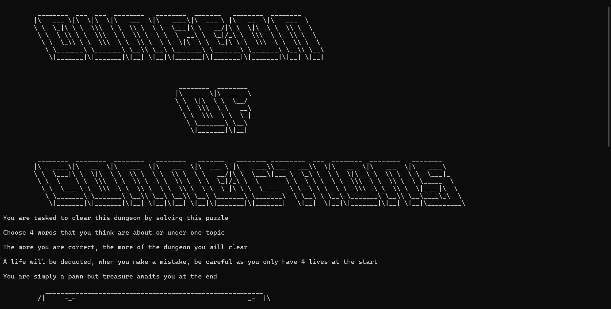

CMSC 22 ICS Schedule Planner

CMSC 150 Pollution Management

The Best BS Computer Science Student
• Excellent Problem Solving
• Great Communicator
• Charismatic
I am Lance Alimagno a 19 year old student, hailing from San Pablo City, Laguna. I am currently studying BS Computer Science at the University of the Philippines Los Banos. I have long been passionate for the advancement technology since being raised with a computer readily available. Creating my relentless drive for field of Computer Science.

Paseo de Escudero St., Brgy. V-D, San Pablo City, Laguna, 4000
lfalimagno@up.edu.ph
https://github.com/lfalimagno/© 2026 Lance Alimagno
Back to Top